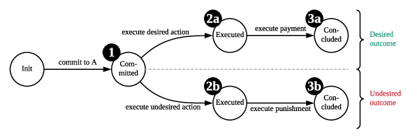
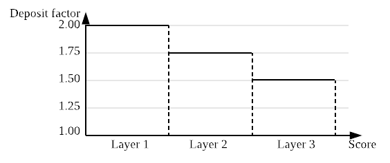
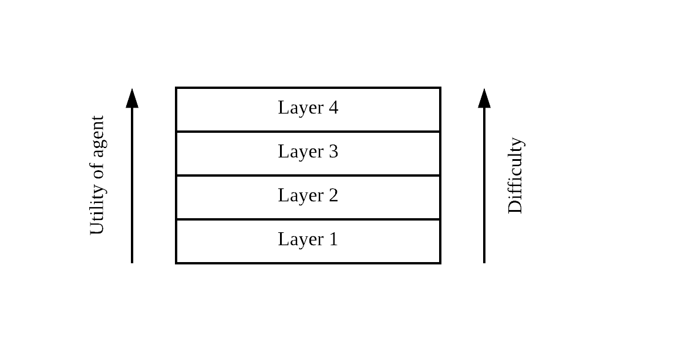
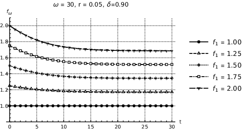

Security through deposits
Cryptoeconomic protocols are ensuring security through deposits. This includes for example stablecoins like Dai, Plasma, payment channels (Raiden, PERUN), verifiable computation (TrueBit) or cross-chain protocols like XCLAIM. If an agent Alice wants to participate in these protocols, Alice needs to provide a cryptocurrency deposit as an insurance against misbehaviour. A cryptoeconomic protocol has, in an abstract sense, a list of desired and undesired actions.

In the first step, Alice commit to a contract A by depositing some cryptocurrency. Next, Alice can decide if she want to execute a "desired action" or an "undesired action". In case Alice performs an undesired action, her deposit is usually "slashed", i.e. the collateral is destroyed or the "victim" of the undesired action is refunded with that collateral. Contrary, if Alice performs a desired action, she is usually rewarded with a fee that the consumer of the service is paying (e.g. a solver in TrueBit).
But how much deposit do I need?
The problem is: no one really knows how much deposit you actually need in a wide range of protocols. For example, as the USD to Ether value is volatile, it is unclear much deposit is actually needed for the CDP in Dai. Hence, you see the deposit level fluctuating from 350% to 600%. Also, how much a computation is worth is very subjective to the service provider and the receiver of the result. We can say there are two sources of uncertainty:
- Private information: These are unknown values that different parties assign to a certain outcome. For example, a solver of a computation might just value the result by the payment he gets. The receiver of the result might require it for a critical application and hence assign a much higher value to it.
- Event-dependency: These are values that change over time in an unpredictable manner. For example, the USD to Ether exchange rate in exactly 26 days is practically impossible to forecast.
Because of these sources of uncertainty, protocol designer need to require more deposit than the current risk. They need to anticipate different private information and future events to ensure their protocol remains secure over time.
Balance: Reducing deposits with the same level of security
Enter Balance: a protocol that allows you to reduce these deposits securely. We now know that we need to over-collateralize if we have private information and event-dependency. However, we can reduce deposits over time while keeping the same level of protection. We achieve this by assigning agents to layers that represent a certain level of deposit. An agent can be any users or organization in a protocol and is identified by its public key. Simply speaking, it works like this:

An agent starts at Layer 1 when the agent first commits to the protocol. So for example, I would start with a deposit factor of 2.0 at first, requiring 200% collateral. When I perform desired action, I can move to Layer 2 and reduce my deposit factor to 1.75. Hence, I just reduced my collateral factor by 25 percentage points! I keep doing desired actions until I make it to the highest layer with the lowest deposit factor.
Feedback mechanism
Assume you are receiving points as an agent if you perform actions that are part of the desired actions. The smart contract implementing the protocol is aware of all these actions. Thereby, the agents actions are directly translated into a score for performing this action. The more contributions the higher the ranking. The higher the ranking, the less collateral the agent has to provide. We end up with a construct like this:

The higher I move up the layers, the more difficult it becomes to maintain my position. At the same time, my utility gets higher since I need to lock less deposit to participate in the protocol.
Less deposit and the same security?
Balance allows agents to reduce their capital deposits over a sequence of periodic rounds, while preventing the addition of incentives to act maliciously. In fact, malicious agents that aim to misbehave in a protocol obtain more utility if they do early on, before any reductions in their deposit occurs. Conversely, honest and rational agents receive a higher utility by consistently acting in the interest of the protocol. Balance achieves this property for protocols which feature over-collateralization by reducing deposits to a lower bound. Above the lower bound, the additional utility gained from reducing the deposit is less than the opportunity cost for locking-up the deposit in the first place. Hence, a malicious agent gains no additional utility from cheating in a later round with a reduced deposit. However, honest and rational agents gain additional utility by reducing the opportunity cost of the locked deposit.
Reducing deposits is restricted to a boundary
Unfortunately, we cannot reduce deposits indefinitely. Generally speaking, the reduction depends on parameters like the total number of layers and the expected opportunity cost for locking deposits. We can illustrate this with the figure below:

The higher the initial deposit factor, the more we can reduce the deposit factor up to a certain bound. Each of the five curves above represent the boundary with a starting deposit level ranging from 1.0 to 2.0. As long as the deposit level is set above the boundary, we enjoy the same level of security. If we set the deposit factor below the boundary, the protocol will be less secure.
Balance in detail
Balance is implemented as a smart contract and can be integrated with existing cryptoeconomic protocols. Agents collect points that add up to their score within a single period. After the end of the period, the agents are curated to layers depending on their current score and their current layer. They can either:
- Stay in the same layer.
- Get promoted to the next layer.
- Get demoted to the previous layer.
- Get removed from the registry.
The idea is to set a fixed amount of time or events in which agents can collect these points.
At t_0, each agent starts with 0 points. Each layer defines a lower and upper bound.
If an agent manages to collect enough points to make the cut of the current layer (its upper bound), then the agent
gets promoted to that layer at t_1.
If the agent falls below the lower bound of the current layer, it gets demoted to the previous layer.
At the end of the period, scores are reset and the agent starts from 0 again.
Applying Balance to XCLAIM
We integrate Balance with XCLAIM. XCLAIM is a protocol that allows secure, trustless, and efficient cross-chain interoperability between any pair of blockchains. In XCLAIM, over-collateralization is required due to the volatility of the cryptocurrencies of the connected chains. With Balance, we can reduce this by 10% and maintain the same level of security.